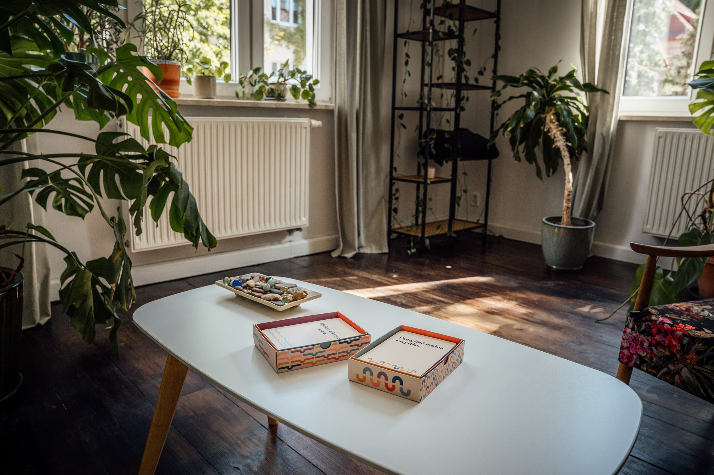
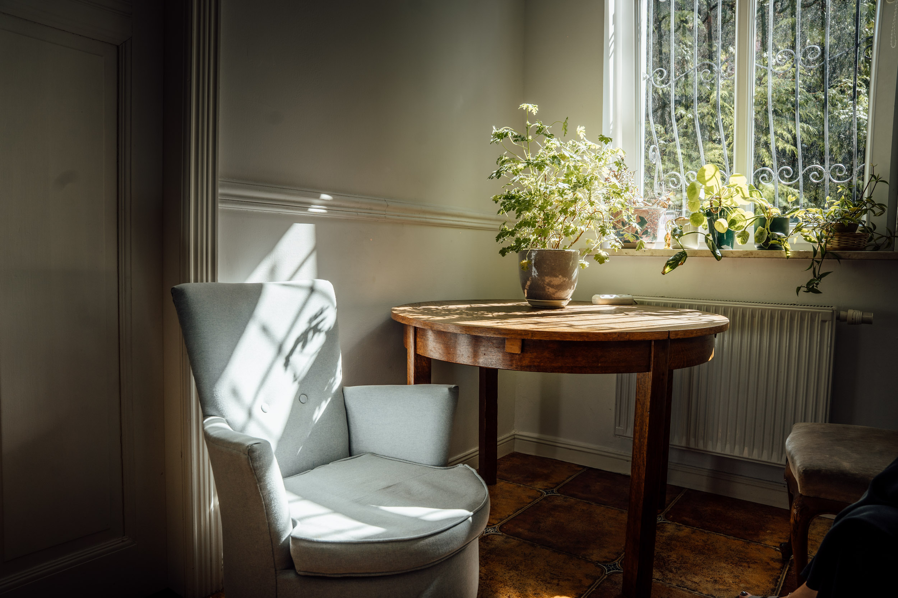
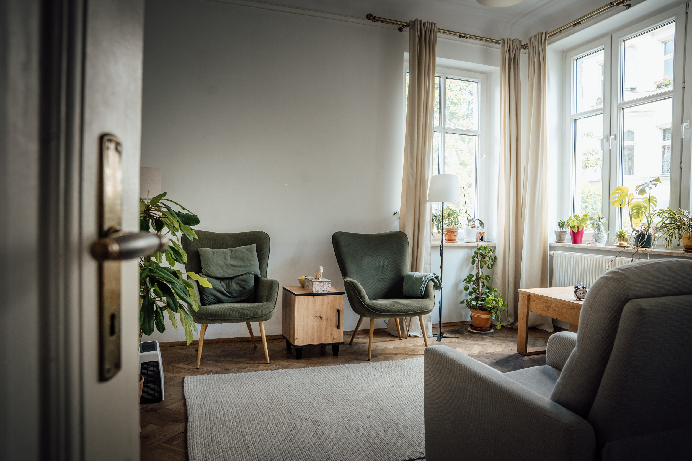
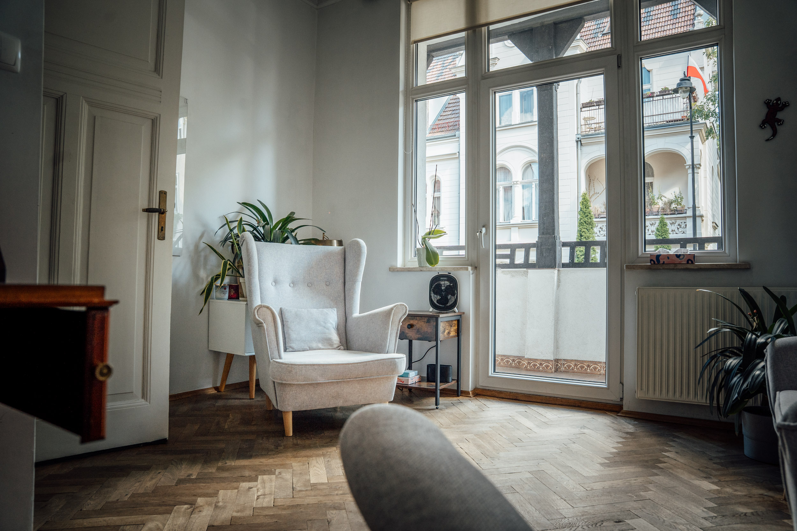
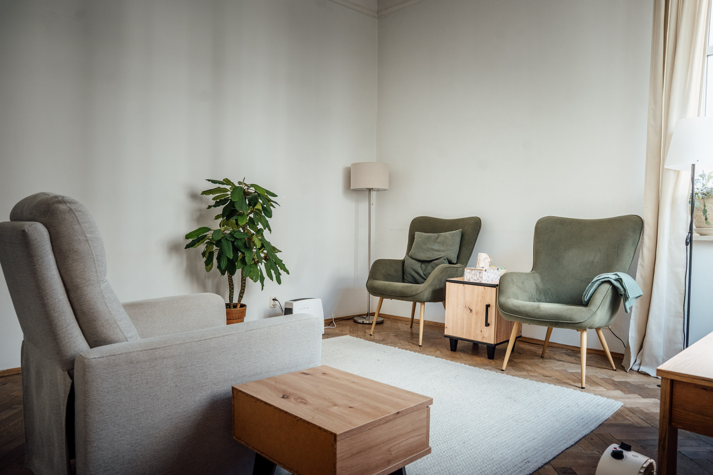

Ośrodek psychoterapii
Tworzymy przestrzeń terapeutyczną, w której można w komfortowych warunkach uporządkować swoje myśli, emocje oraz relacje z innymi.
Prowadzimy indywidualną psychoterapię dla osób dorosłych, młodzieży oraz par. Pomagamy w osobistym rozwoju oraz w pokonywaniu trudnych momentów w życiu.

O ośrodku
Poukładane działa od marca 2022 roku w Gdańsku Wrzeszczu.
W ośrodku prowadzona jest psychoterapia indywidualna dla osób dorosłych, młodzieży i par, pomoc w obszarze psychotraumatologii, wsparcie w rozwoju osobistym i kryzysach.
Dla kogo
To bezpieczne miejsce dla osób zmagających się z trudnościami w relacjach.
Przyjmujemy osoby przeżywające kryzys psychiczny, mające za sobą doświadczenia traumatyczne, chorujące psychicznie lub mające trudności z wyrażaniem emocji.

O zespole
Zespół tworzą osoby po całościowym akredytowanym kursie psychoterapii.
Kurs atestowany jest przez Sekcję Naukową Psychoterapii Polskiego Towarzystwa Psychiatrycznego lub przez Sekcję Psychoterapii Polskiego Towarzystwa Psychologicznego.

Superwizja
Zespół regularnie uczestniczy w superwizjach i spotkaniach klinicznych.
Superwizje indywidualne, grupowe oraz spotkania kliniczne pozwalają dbać o kompleksowość i najwyższą jakość świadczonej pomocy.
Specjaliści pracują pod stałą superwizją indywidualną i są zobowiązani do przestrzegania kodeksu etyki psychoterapeutów.
FAQ
Najczęstsze pytania
W jakich sytuacjach warto rozważyć psychoterapię?
Na terapię warto się zgłosić zawsze wtedy, gdy czujesz, że coś w Twoim życiu sprawia Ci trudność, przytłacza Cię, niepokoi lub powtarza się, mimo Twoich starań, żeby to zmienić.
Psychoterapia może pomóc, jeśli:
- trudno Ci radzić sobie z emocjami, stresem, lękiem czy poczuciem winy,
- masz problemy w relacjach, w pracy lub w podejmowaniu decyzji,
- przeżywasz żałobę, stratę, rozstanie,
- chcesz lepiej zrozumieć siebie, swoje potrzeby i sposób funkcjonowania.
Nie musisz mieć jasno określonego celu — psychoterapeuta pomoże Ci go wspólnie doprecyzować podczas pierwszych spotkań.
Jak wygląda pierwsze spotkanie z psychoterapeutą? Czy trzeba się do niego przygotować?
Nie musisz się specjalnie przygotowywać. Pierwsza konsultacja to rozmowa, podczas której terapeuta stara się poznać Twoją sytuację, zrozumieć, co Cię do niego sprowadza i jak mógłby Ci pomóc.
To też moment, żebyś Ty mogła/mógł zobaczyć, czy dobrze czujesz się w kontakcie z tą osobą.
Warto jedynie pomyśleć, co skłoniło Cię do poszukania pomocy i czego potrzebujesz — resztę ustalicie wspólnie.
Jak wybrać psychoterapeutę?
Najważniejsze jest to, byś czuł/a się z terapeutą bezpiecznie i swobodnie. Warto zwrócić uwagę na jego kwalifikacje (ukończona szkoła psychoterapii, doświadczenie, superwizja), ale też na to, czy sposób jego pracy Ci odpowiada.
Zaufanie i poczucie zrozumienia to podstawa skutecznej terapii.
Czym różni się psychoterapeuta, psycholog i psychiatra?
Psycholog — ukończył studia psychologiczne. Może prowadzić diagnozy psychologiczne, konsultacje i udzielać wsparcia.
Psychoterapeuta — to osoba z wyższym wykształceniem (najczęściej po studiach psychologicznych) po dodatkowym, kilkuletnim szkoleniu z psychoterapii, przygotowana do prowadzenia długoterminowej pracy terapeutycznej.
Psychiatra — to lekarz, który może przepisywać leki i prowadzić leczenie farmakologiczne. Zdarza się, że psychiatrzy mają również ukończone szkolenie z psychoterapii i pracują także terapeutycznie.
Czasem skuteczne wsparcie wymaga współpracy tych specjalistów.
Czy psychoterapeuta może przepisywać leki?
Nie. Leki może przepisać tylko lekarz psychiatra. Jeśli terapeuta uzna, że farmakoterapia mogłaby Ci pomóc, zaproponuje konsultację u psychiatry.
Czym różnią się nurty psychoterapii i jak wybrać ten dla siebie?
Psychoterapia ma różne „języki" — czyli nurty, np. psychodynamiczny, poznawczo-behawioralny, systemowy czy humanistyczny. Różnią się podejściem i metodami, ale cel jest wspólny: zrozumienie Ciebie i wsparcie w zmianie.
Nie musisz znać się na nurtach — terapeuta wyjaśni, jak pracuje i czy to podejście może być dla Ciebie odpowiednie.
Czy psychoterapia online jest skuteczna?
Tak. Psychoterapia online jest pełnoprawną i skuteczną formą pracy terapeutycznej, także jeśli z jakiegoś powodu nie możesz lub nie chcesz spotykać się na żywo, to jest to dobra alternatywa. Spotkania odbywają się przez bezpieczne platformy wideo, a terapeuta pracuje w taki sam sposób, jak w gabinecie.
Warto jednak zaznaczyć, że nie wszyscy terapeuci oferują terapię online.
Jak długo trwa psychoterapia i jak często odbywają się sesje?
Czas trwania terapii zależy od Twoich potrzeb i celów. Zazwyczaj spotkania odbywają się raz w tygodniu i trwają 50 minut.
Niektóre terapie trwają kilka miesięcy, inne — rok lub kilka lat. Ważne, by tempo było dostosowane do Ciebie i Twojej gotowości na zmianę.
Czy terapeuta może dawać „zadania domowe"?
Czasem tak. Niektórzy terapeuci proponują refleksje lub ćwiczenia między sesjami — ma to pomóc w utrwalaniu zmian. Nie jest to jednak obowiązek — każda terapia ma inny rytm i styl pracy.
Czy mogę zmienić terapeutę w trakcie terapii?
Tak, możesz. Warto jednak najpierw porozmawiać o tym ze swoim terapeutą — otwarcie i szczerze. Taka rozmowa często bywa ważnym momentem w procesie i może pomóc zrozumieć, co się dzieje w relacji terapeutycznej.
Jeśli po rozmowie nadal chcesz zmienić terapeutę, dobrze jest wspólnie podsumować dotychczasową pracę i zakończyć terapię w sposób domknięty.
Czy psychoterapia naprawdę działa?
Tak — skuteczność psychoterapii została potwierdzona w wielu badaniach naukowych.
Efekty to m.in. lepsze rozumienie siebie, większa odporność emocjonalna, poprawa relacji i jakości życia.
Zmiana bywa procesem, który wymaga czasu i zaangażowania, ale naprawdę przynosi trwałe rezultaty.
Czy z psychoterapii mogą korzystać dzieci i młodzież?
Tak. W naszym ośrodku pracują terapeuci specjalizujący się w pracy z dziećmi i nastolatkami.
Terapia dzieci różni się od terapii dorosłych — często wykorzystuje zabawę, rysunek, metaforę. Rodzice lub opiekunowie są zwykle włączeni w proces terapeutyczny.
Czym różni się terapia par od terapii indywidualnej?
W terapii par pracujemy nad relacją — nad sposobem komunikacji, bliskością, zrozumieniem siebie nawzajem.
To nie terapia jednej osoby „przeciwko" drugiej, lecz wspólna przestrzeń do rozmowy i odbudowy więzi.
W jakich sytuacjach para może potrzebować terapii?
Kiedy w relacji pojawia się trudność, której nie udaje się wspólnie przezwyciężyć — np. częste konflikty, brak bliskości, trudność w komunikacji, zdrada, rozbieżne potrzeby.
Terapia par to szansa na lepsze zrozumienie siebie i partnera, niezależnie od tego, czy para chce odbudować związek, czy dojść do decyzji o rozstaniu w sposób spokojny i świadomy.
Czy pary jednopłciowe mogą korzystać z terapii par?
Oczywiście. Terapia par jest dla wszystkich osób tworzących związek — niezależnie od płci czy orientacji. Każda relacja może potrzebować wsparcia i zrozumienia.
Jak długo trwa terapia par i czy jest skuteczna?
Czas trwania zależy od problemu i motywacji obojga partnerów. Zazwyczaj trwa kilka miesięcy do około roku.
Skuteczność terapii zależy od zaangażowania i gotowości do pracy po obu stronach — terapeuty i pary.
Czym jest superwizja?
Superwizja to spotkania psychoterapeuty z bardziej doświadczonym specjalistą, podczas których omawia on swoją pracę (anonimowo, bez danych osobowych pacjentów).
Celem superwizji jest zapewnienie najwyższej jakości terapii i bezpieczeństwa dla pacjentów.
Czy to w porządku, że terapeuta poprosił o zgodę na nagrywanie sesji lub kontakt do mojego psychiatry?
Tak — to standardowe, etyczne praktyki.
Terapeuta może poprosić o zgodę na nagranie sesji wyłącznie w celach szkoleniowych lub superwizyjnych, zawsze z Twoją pisemną zgodą.
Kontakt do psychiatry lub innego specjalisty może być potrzebny dla zapewnienia ciągłości opieki i bezpieczeństwa — zawsze z poszanowaniem Twojej prywatności.
Specjaliści
Zespół
certyfikowany psychotraumatolog, psychoterapeutka, terapeutka rodzinna, socjoterapeutka, pedagog resocjalizacji
Dorota Pytel
Specjalizuje się w terapii indywidualnej dla nastolatków i dorosłych, którzy doświadczyli kryzysu, traumy lub trudności emocjonalnych. Pracuje również z osobami z depresją, zaburzeniem osobowości. Pracuje z parami i rodzinami, wspierając ich w lepszym rozumieniu siebie i poprawie komunikacji. Prowadzi diagnozę w kierunku dysocjacyjnych zaburzeń tożsamości testem TADS-I oraz diagnozy psychotraumatologiczne.
Ukończyła całościowy kurs psychoterapii atestowany przez Polskie Towarzystwo Psychiatryczne i akredytowany przez Polskie Towarzystwo Psychologiczne, czteroletnie szkolenie z psychotraumatologii, Podyplomowe Studia Psychologii Klinicznej, szkolenie z Systemowej Terapii Rodzin, Studium Zaburzeń Odżywiania przy Ogólnopolskim Centrum Zaburzeń Odżywiania. Aktualnie uczy się w Podyplomowym Studium Psychoterapii dzieci i młodzieży. Pracuje w nurcie integracyjnym ze szczególnym uwzględnieniem nurtu psychodynamicznego i systemowego.
psycholog, psychoterapeutka w procesie certyfikacji
Sylwia Ćwiek-Górska
Prowadzi psychoterapię indywidualną dla osób dorosłych.
Ukończyła całościowy akredytowany kurs psychoterapii atestowany przez SNP PTP i SP PTP. Członkini Sekcji Naukowej Psychoterapii Polskiego Towarzystwa Psychiatrycznego oraz Sekcji Psychoterapii Polskiego Towarzystwa Psychologicznego. Pracuje w podejściu ericksonowskim.
psycholog i psychoterapeutka w trakcie certyfikacji
Anna Szymańczyk
Pracuje z osobami dorosłymi. Ma doświadczenie w pracy z osobami przeżywającymi różnego rodzaju traumy, kryzysy oraz stratę. Zawodowo była związana ze szpitalem św. Wojciecha w Gdańsku, gdzie udzielała wsparcia psychologicznego kobietom w okresie okołoporodowym. W ramach projektu „Przystanek Mama" prowadziła konsultacje psychologiczne, koncentrując się na wczesnym wykrywaniu depresji poporodowej.
Stale rozwija swoje kompetencje, uczestnicząc w licznych kursach i szkoleniach. Jest członkiem Sekcji Psychoterapii Polskiego Towarzystwa Psychologicznego. Pracuje w oparciu o model integracyjny, łącząc podejścia różnych szkół psychoterapeutycznych i indywidualnie dostosowując metody pracy do potrzeb pacjentów.
psycholożka, psychoterapeutka integratywna i psychodietetyczka
Agnieszka Nowak
Certyfikowana Terapeutka Psychoterapii Pozytywnej Transkulturowej (WAPP, Wiesbaden, Niemcy). Członkini Polskiego Towarzystwa Psychoterapii Stosowanej (PTPS).
Pracuje w nurcie integratywnym, łącząc techniki ericksonowskie, systemowe i Psychoterapię Pozytywną Transkulturową. Jej podejście opiera się na akceptacji, elastyczności i dostosowaniu metod do indywidualnych potrzeb pacjenta, co umożliwia rozwój jego wewnętrznego potencjału.
psycholog, psychoonkolog i psychoterapeutka
Miriam Gajda
Prowadzi psychoterapię indywidualną (dorosłych i młodzieży), terapię par oraz rodzin. Zajmuje się również szkoleniami i warsztatami z obszaru psychoedukacji i rozwoju umiejętności miękkich.
Pracuje integracyjnie w podejściach systemowym i humanistycznym (Gestalt), wykorzystując również techniki poznawczo-behawioralne oraz ACT (Terapia Akceptacji i Zaangażowania). Doświadczenie zdobywała pracując w gabinecie prywatnym, podczas pracy i staży klinicznych na oddziałach psychiatrycznych, w środowiskowych domach samopomocy oraz w hospicjum.
Stawki
Cennik
| konsultacjapierwsze 2-4 spotkania poprzedzające rozpoczęcie psychoterapii | 50 min | 180-220 zł |
|---|---|---|
| psychoterapia indywidualnapo okresie konsultacyjnym, dotyczy osób dorosłych i młodzieży po 13 r.ż. | 50 min | 180-220 zł |
| psychoterapia pary | 50 min | 250 zł |
| terapia rodzinna | 75 min | 300 zł |

Rejestracja
Kontakt
